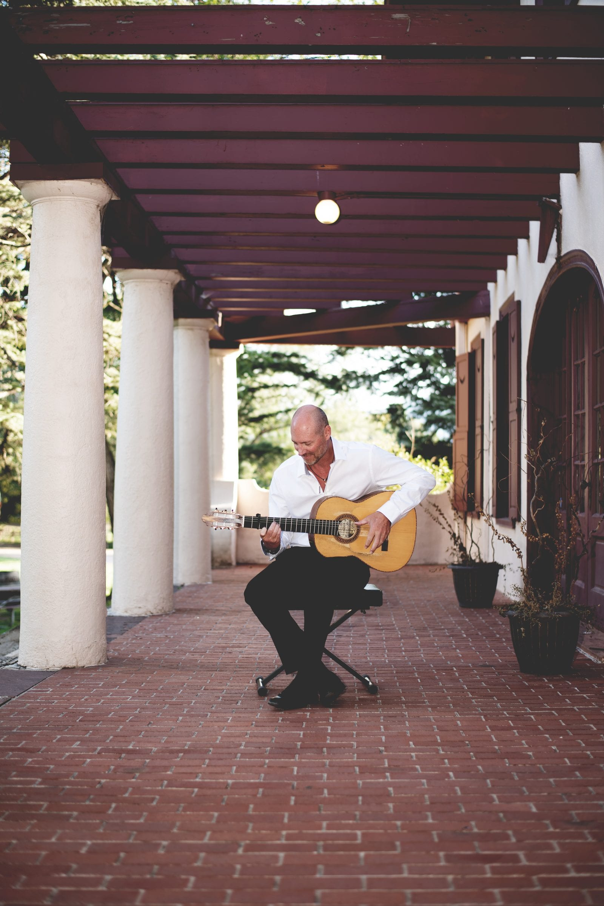
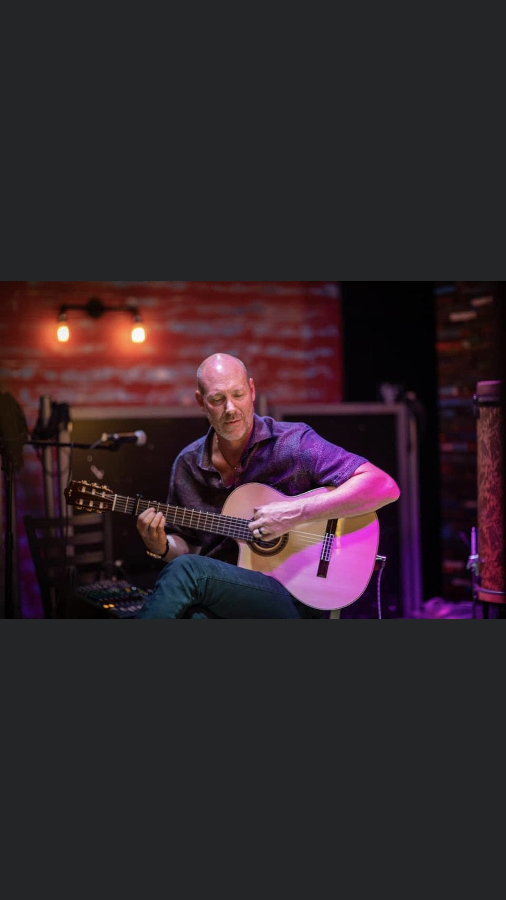
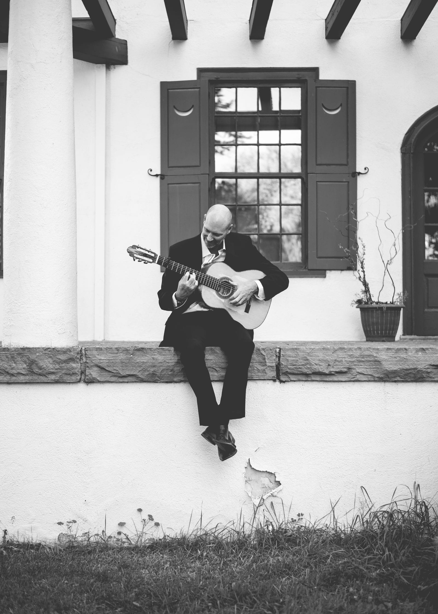

Flamenco trio
Spanish guitar for private events, played by Dirty Flamenco.
- InvitedTwo private auditionsAmerica's Got Talent
You know how it feels when a flamenco guitarist really gets going, and you can't take your eyes off those hands? Dirty Flamenco is a flamenco trio led by guitarist Gary Meyers, with bass and cajón (a box drum). The trio can play quietly through cocktails and dinner, and we can plan a featured performance for the moment you'd like everyone to stop and watch.
Dirty Flamenco is a great pick for dinner parties, milestone birthdays, member events and corporate dinners. Prefer one musician? Check out our Spanish guitarist, who's a lovely fit for a ceremony or a cocktail hour.
We can plan the music around your event, including the songs, whether you'd like a dancer and what the trio wears. Here’s how booking through Signet works.
Awards and press
- InvitedTwo private auditionsAmerica's Got Talent
In the press and on air
- Stitched Sound
Press · 2022
Stages and credits
- Headlined as a four-piece, Dazzle (2024)
- Gary was the first solo guitarist Royal Caribbean's Celebrity Cruises ever hired, playing flamenco on the Celebrity Solstice across the Mediterranean
- Bistro Mariposa at the Monarch Casino in Black Hawk (2024)
- Gary's solo residency at Casa Bonita
- Gary was the solo flamenco guitarist at JING Denver
- Gary studied flamenco for more than ten years with Maestro René Heredia, who brought flamenco to Colorado, and played in his group
Trusted and booked by
Featured performance
How does a flamenco trio fit into an event?
The trio can play through your whole event, and the featured performance is when they really let loose. Just let us know where you'd like it in the flow of the evening, and our run of show guide can help you plan it.
The trio can also play slower or livelier to suit your event.
Video Clips
Watch Dirty Flamenco play live
Here's the trio playing live, along with a few clips of Gary Meyers on guitar. You'll hear a Malagueña, a rumba, a farruca, tangos, a piece by the flamenco guitarist Sabicas, Can’t Help Falling in Love and three guitars on Entre dos Aguas.





Occasions
Perfect booking for
- Member and association events
- Flamenco is a great way to give a member or association event some color and a sense of occasion.
- Corporate dinners
- A short flamenco performance can give a corporate dinner a high point, and we'll plan it around your program.
- The dinner party at home
- A flamenco trio can turn a dinner at home into a real occasion, indoors or out in the backyard. It's one of the best fits for the trio, too.
- The milestone birthday
- The trio can play a fiftieth or sixtieth birthday, an anniversary or a retirement party, in Denver or up in the mountains. The music gives the party a centerpiece, so the guest of honor can just enjoy it.
- The wedding ceremony and cocktail hour
- The trio can play your prelude, your processional and your recessional, and then keep the flamenco going through the cocktail hour.
Curious what live music costs in Colorado? Our cost guide gives a general view.
Configurations
| Size | What it suits |
|---|---|
| TrioFlamenco guitar, bass and cajón (a box drum) | The trio is a great choice for cocktails and dinner. They can play anywhere from background to full volume, and they don't need a dance floor. |
| QuartetThe trio plus a dancer | Bring in the dancer when you want a featured performance in your program. |
Not sure whether you want the trio on its own or with a dancer? Just tell us about your event and we'll help you decide.
A sample of the song list
Flamenco is organized by palo, the traditional form, rather than by song title. This is just a sample, and the trio picks from these forms to suit your guests.
- Bulerias
- Solea
- Alegrias
- Tangos
- Rumba
- Fandangos
- Sevillanas
- Guajiras
What clients say
“Gary is an amazing musician, reliable and easy to work with. Fans love Keepin' It Dirty with these guys and will show up to support! I book them multiple times a month to keep our patio packed during patio season... perfect for any venue or event!”
Venues
We’d pick Dirty Flamenco for live music at these venues.

Colorado Springs
Cheyenne Mountain Resort
The Centennial, Colorado and Remingtons ballrooms and the beach on the resort’s private lake.
Acts we'd pickClassical Strings · Tejas Singh · Little Moses Jones
Live music at Cheyenne Mountain Resort
Downtown Denver
Four Seasons Hotel Denver
The Grand Ballroom, the Cottonwood Ballroom and the third-floor Pool Terrace.
Acts we'd pickLittle Moses Jones · Tejas Singh · Dirty Flamenco
Live music at Four Seasons Hotel Denver
Colorado Springs, above Garden of the Gods
Garden of the Gods Resort and Club
The Three Graces Ballroom and Terrace, the View at Kissing Camels, the Garden Room, the Hill Room and the Reflection Pool.
Acts we'd pickClassical Strings · Tejas Singh · Meghan Clarisse
Live music at Garden of the Gods Resort
Downtown Denver
Grand Hyatt Denver
The Pinnacle Club on the 38th floor, the Colorado Ballroom and the Aspen Ballroom.
Acts we'd pickJazz Duo · Little Moses Jones · Quadrasonic
Live music at Grand Hyatt Denver
Downtown Denver
Hilton Denver City Center
The Colorado, Denver and Penrose ballrooms and an outdoor plaza.
Acts we'd pickLittle Moses Jones · Soul and R&B Band · Jazz Duo
Live music at Hilton Denver City Center
Downtown Denver, at the Colorado Convention Center
Hyatt Regency Denver at Colorado Convention Center
The Centennial Ballroom, the Capitol Ballroom, the Denver City Terrace and the Silver Room.
Acts we'd pickClassical Strings · Little Moses Jones · Soul and R&B Band
Live music at Hyatt Regency Denver
Broomfield, between Denver and Boulder
Omni Interlocken Hotel
The Interlocken and Centennial ballrooms, Ponderosa, the Outdoor Pavilion and the ceremony lawn.
Acts we'd pickClassical Strings · Dirty Flamenco · Little Moses Jones
Live music at Omni Interlocken
Downtown Boulder
St Julien Hotel & Spa
The Xanadu Ballroom, the lawn, the Redgarden terraces and Jill’s, with views of the Flatirons.
Acts we'd pickClassical Strings · Tejas Singh · René Moffatt
Live music at St Julien Hotel & Spa
Colorado Springs, at the foot of Cheyenne Mountain
The Broadmoor
The Main Ballroom, the Lake Terrace and Lakeside Terrace, Broadmoor Hall, the International Center and Cheyenne Lodge.
Acts we'd pickClassical Strings · Jazz Duo · Dirty Flamenco
Live music at the Broadmoor
Downtown Denver
The Brown Palace Hotel and Spa
The Grand Ballroom, the Onyx Room, Central City, the Brown Palace Club and the atrium lobby.
Acts we'd pickTejas Singh · Jazz Duo · Dirty Flamenco
Live music at the Brown PalaceUnion Station, Lower Downtown Denver
The Crawford Hotel
The Cooper Lounge, the Great Hall, the Webb Gallery and the Terminal Bar on the Plaza.
Acts we'd pickJazz Duo · Solo Guitarist · Tejas Singh
Live music at the Crawford Hotel
Westminster, between Denver and Boulder
The Westin Westminster
The Westminster, Legacy and Standley ballrooms, the Waterfall Gardens, the Lake House and the Sunset Rooftop Deck.
Acts we'd pickClassical Strings · Little Moses Jones · Quadrasonic
Live music at the Westin Westminster
Flamenco booking questions
Got another question? You'll find more in our full FAQ, or you can just ask us.
Does Dirty Flamenco play traditional flamenco or Spanish guitar?
How loud is it?
Is Spanish guitar right for a wedding ceremony?
Can we add a dancer?
Want Dirty Flamenco at your event? Send us the date and we'll see if they're free.
We'll size the sound to your venue, and you'll have a single point of contact from start to finish.
Want photos or video of your event? Add them to your booking.